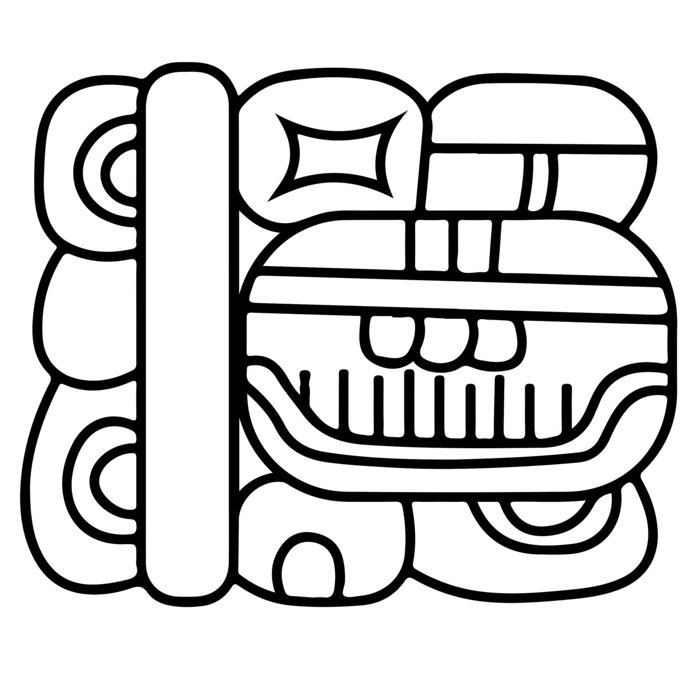

Product direction
Maya is a converter/font pipeline. It does not try to make Latin letters wear a Maya costume. It maps Latin-ish input into Maya visual output.
Current state of the Maya project as an inspectable page: product definition, proof vocabulary, source-ledger claims, live demo, and the next safe gate.
Updated 2026-05-09 13:35 CEST from the project SpecDD files and source ledger. The safe sentence is still: Latin/transliteration input becomes Maya visual glyph-block output through parser, mapping, composition, and font/render proof.
Maya is a converter/font pipeline. It does not try to make Latin letters wear a Maya costume. It maps Latin-ish input into Maya visual output.
make validate is clean. Latest validation report has ok: true, with no errors or warnings.
WAK@CHAAN-wa@AJAW parses, maps, shapes, and renders as the first Maya block proof.
A curated source packet notebook exists for orientation, with source PDFs and project packet. It is a research aid, not authority.
The current phrase is mechanical-high; visual-canon-unreviewed. Good mechanics. Not yet full canonical Maya authenticity.
Next tokens require accepted claims, proof contracts, fixtures, structural receipts, and visual receipts. No blind glyph expansion.
The useful proof is not a paragraph saying “it works”. It is a small machine you can poke. Type input, inspect parser output, inspect mapping, inspect shaping receipt, then look at the rendered block.
Input: WAK@CHAAN-wa@AJAW Parser: main WAK + infix chain CHAAN / wa / AJAW Mapping: maya.block.WAK_CHAAN_wa_AJAW at U+E000 HarfBuzz: [maya.block.WAK_CHAAN_wa_AJAW=0+1000] Verdict: STRUCTURAL_PASS + MAYA_DESIGN_PASS for phase-0 visible proof Caveat: mechanical proof only, visual-canon-unreviewed

WAK@CHAAN-wa@AJAW canonical benchmark
WAK+CHAN (adjacency/stack test)
Simple syllable: ku
Simple logogram: K'IN
Simple syllable: ti
Simple logogram: AJAW
Numeric token: 6
Compound demo string
Likely candidates from the plan: ku, K'IN, AJAW, ti, u, or 6. Choose one or one tiny compound, not a vocabulary avalanche.
Any implementation-affecting source finding must become an accepted atomic claim in the source ledger before it governs a spec or proof.
Each token needs a local proof contract, parser and mapping fixture, HarfBuzz or structural receipt, saved visual receipt, and explicit pass or iterate note.
Run the Maya critic loop before calling it progress. A pretty screenshot without a receipt is a mask. Masks are allowed; lies are not.
The project is in a good narrow place. The first converter proof is real enough to inspect, but not broad enough to generalize. That is exactly where it should be.
Latest accepted proof claim cluster: MAYA-ATTEST-WAK-001 · MAYA-ATTEST-CHAN-001 · MAYA-ATTEST-AJAW-001 · MAYA-ATTEST-WA-001. NotebookLM exists for orientation. The ledger and SpecDD files remain the governing layer.